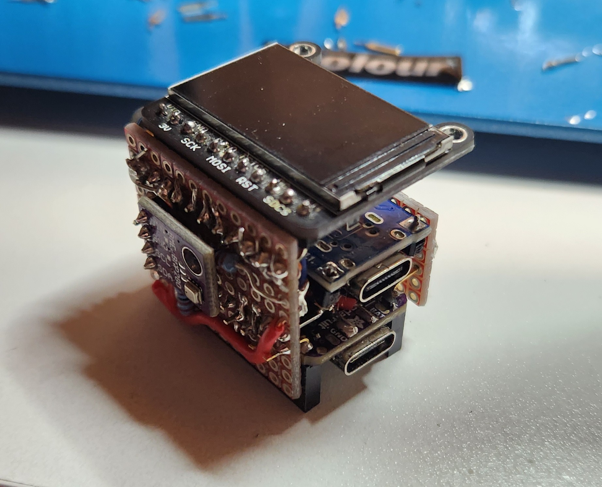
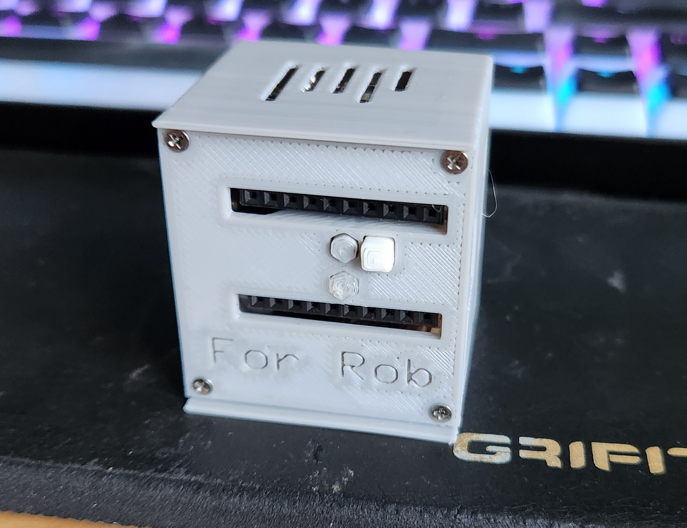

Cube
A tiny box with a screen, a WiFi connection, and some sensors,
which allowed it to be a compass, weather station, and clock.
This was my first foray beyond Arduino, using the C vendor SDK for the ESP32-S2.
Ultimately this cemented my distaste for the hobbyist-oriented Arduino platform
and would eventually lead to me writing Rust for microcontroller firmware where possible.
Project Details
This project was a little lark inspired by a family Secret Santa exchange, which got a bit out of hand.
I wanted to make something interesting for it, and happened to have a very small ESP32-S2 board from Adafruit on hand,
as well as a TFT plus SD card breakout and a six-axis orientation sensor (accelerometer, gyroscope, and magnetometer).
I attached all the modules together in as compact a space as possible,
with just enough space for a little USB LiPo module and a tiny battery.
I designed and 3D printed a case. It connects to Wifi to get accurate time and weather data,
and depending on which way it is oriented, it displays either a clock, the current weather,
a compass, a random image stored on the SD card, or the accerometer data.
Photos

Another angle of the assembled guts of the cube.

The bottom side, showing GPIO output options
as well as 3D-printed buttons which actuate ones on the ESP32-S2